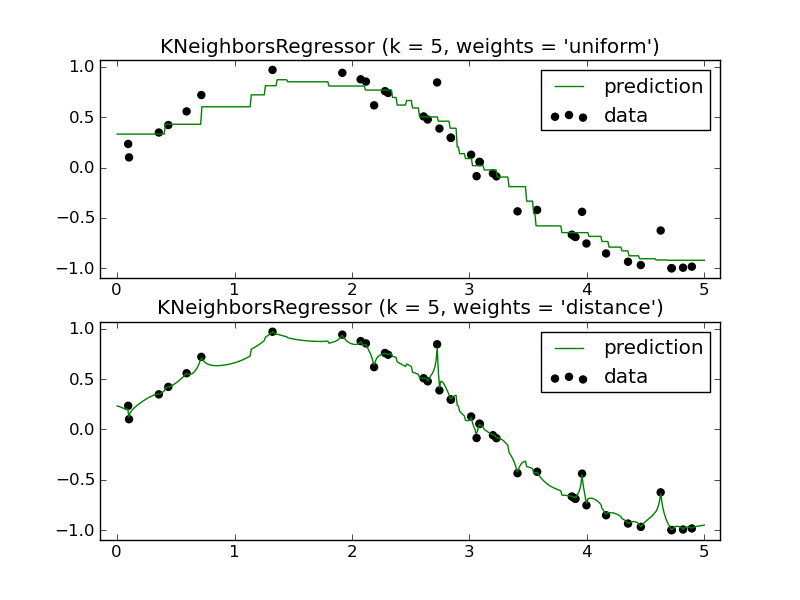

Nearest Neighbors regression¶
Demonstrate the resolution of a regression problem using a k-Nearest Neighbor and the interpolation of the target using both barycenter and constant weights.
Python source code: plot_regression.py
print __doc__
# Author: Alexandre Gramfort <alexandre.gramfort@inria.fr>
# Fabian Pedregosa <fabian.pedregosa@inria.fr>
#
# License: BSD, (C) INRIA
###############################################################################
# Generate sample data
import numpy as np
import pylab as pl
from sklearn import neighbors
np.random.seed(0)
X = np.sort(5*np.random.rand(40, 1), axis=0)
T = np.linspace(0, 5, 500)[:, np.newaxis]
y = np.sin(X).ravel()
# Add noise to targets
y[::5] += 1*(0.5 - np.random.rand(8))
###############################################################################
# Fit regression model
n_neighbors = 5
for i,weights in enumerate(['uniform', 'distance']):
knn = neighbors.KNeighborsRegressor(n_neighbors, weights=weights)
y_ = knn.fit(X, y).predict(T)
pl.subplot(2, 1, i + 1)
pl.scatter(X, y, c='k', label='data')
pl.plot(T, y_, c='g', label='prediction')
pl.axis('tight')
pl.legend()
pl.title("KNeighborsRegressor (k = %i, weights = '%s')" % (n_neighbors,
weights))
pl.show()